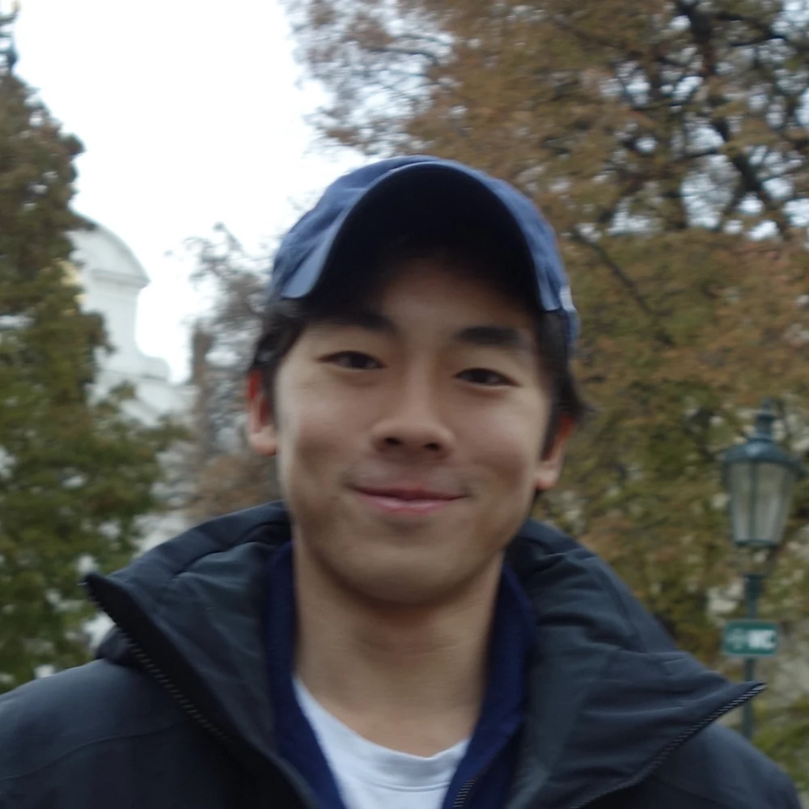

Tanik (Nick) Visuthikosol
Engineer. Strategist.

I solve problems the way a designer sees them and a strategist evaluates them.
I’ve built products for people and organizations, from a one-handed PS4 controller for a stroke survivor to a motion-capture validation tool for Shriners Children’s Hospital. With Design for America, I helped design an educational toy for an after-school program. For Reading Between the Lines, I used my data science coursework to clean and restructure their database. I also founded AROThailand, a robotics education nonprofit, and analyzed the numbers behind business decisions at Looloo Technology.
I kept building things that worked technically, then wanted to understand the why behind them and what happens after they’re built, since that’s usually where things stall. I came to Kellogg to learn how ideas actually get implemented and scaled inside organizations.
- Kellogg School of ManagementMaster in Management2027
- Northwestern UniversityB.S. Manufacturing & Design Engineering, minor in Machine Learning & Data Science2026
- BOULDERING
- CAMPING
- HIKING
- SOCCER
- SQUASH